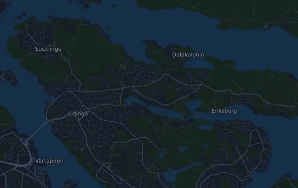

Lidingöloppet 30 km
- Distanse
- 30,4 km
- Høydemeter
- ↑ 349 m
- Høyeste punkt
- 55 moh.
- Underlag
- Terreng og sti
- Karakter
- Lett kupert
Høydeprofil
Forbered deg med Mila
Mila er en løpecoach i en app. Legger du et løp inn i planen din, planlegger coachen ukene fram til start etter formen din, og gir deg en tidsprognose og en plan for tempo, drikke og energi i løypa.

Rett økt. Rett dag.
Løypa

Om løypa
TCS Lidingöloppet 30 km er et terrengløp på 30,4 km i Lidingö, Sverige. Løypa har 349 høydemeter oppover og 355 nedover, 11 m per km, og regnes dermed som lett kupert. Høyeste punkt ligger 55 moh. og laveste 5 moh.
Den største stigningen starter ved km 24,8: 33 høydemeter på 900 m med 3,6 % i snitt, opp til 53 moh. Totalt har løypa 4 stigninger på minst 25 høydemeter; den siste starter ved km 27,6.
I Mila-appen beskriver coachen løypa i detalj på ditt språk og planlegger tempo og energi for den.
Stigninger
| Starter ved | Lengde | Høydemeter | Stigning | Topp (moh.) |
|---|---|---|---|---|
| km 7,3 | 6,1 km | 31 m | 0,5 % | 44 |
| km 20,3 | 1,3 km | 28 m | 2,1 % | 44 |
| km 24,8 | 900 m | 33 m | 3,6 % | 53 |
| km 27,6 | 1,5 km | 27 m | 1,8 % | 48 |
Tempotabell
Lidingöloppet 30 km på 2:30:00 – tid per km og mellomtider
4:57 per km · km 10: 49:25 · km 20: 1:38:51 · mål: 2:30:00
Lidingöloppet 30 km på 3:00:00 – tid per km og mellomtider
5:56 per km · km 10: 59:18 · km 20: 1:58:37 · mål: 3:00:00
Lidingöloppet 30 km på 3:30:00 – tid per km og mellomtider
6:55 per km · km 10: 1:09:12 · km 20: 2:18:23 · mål: 3:30:00
Lidingöloppet 30 km på 4:00:00 – tid per km og mellomtider
7:54 per km · km 10: 1:19:05 · km 20: 2:38:09 · mål: 4:00:00
Tidene forutsetter jevnt tempo hele veien. Det er ren regning, ingen prognose: i bakker, i trengsel og ved drikkestasjoner varierer tempoet.
Vanlige spørsmål
Når går Lidingöloppet 30 km?
Lidingöloppet 30 km går lørdag 25. september 2027 (foreløpig dato). Sjekk dato og starttid hos arrangøren.
Hvor langt er Lidingöloppet 30 km, og hvor mange høydemeter er det?
Løpet er 30,4 km langt med 349 høydemeter oppover og 355 nedover. Høyeste punkt ligger 55 moh.
Hvordan er løypa i Lidingöloppet 30 km?
Løypa regnes som lett kupert, med 11 høydemeter per km i snitt. Den har 4 stigninger på minst 25 høydemeter; den største starter ved km 24,8: 33 høydemeter på 900 m. Løypa går fra start til et mål på et annet sted. Underlaget er terreng og sti.
Hvordan legger jeg opp farten i Lidingöloppet 30 km?
Sikt på en jevn innsats heller enn et jevnt tempo: la farten gå ned i motbakkene, hent den inn igjen når det flater ut, og hold igjen de første kilometerne. De største stigningene starter ved km 7,3, km 20,3, km 24,8 og km 27,6. I Mila får du en tempoplan for akkurat denne løypa etter din egen form.
Flere løp som dette
Flere løp i nærheten
- Härnö Trail 21 km2. oktober 2027 · Härnösand, Sverige
- Härnö Trail Kort 7 km2. oktober 2027 · Härnösand, Sverige
- Härnö Trail Mellan 14 km2. oktober 2027 · Härnösand, Sverige
- Tjurruset 10 km9. oktober 2027 · Stockholm (Norra Djurgården), Sverige
- Helsingborg Marathon 42,3 km4. september 2027 · Helsingborg, Sverige
- Midnattsloppet Malmö 10 km28. august 2027 · Malmö, Sverige
Forbered deg med Mila
Rett økt. Rett dag.
Opplysningene kommer fra løypefilen og arrangørens informasjon. Sjekk dato, starttider og regler hos arrangøren.
Mila er ikke tilknyttet, sponset av eller godkjent av arrangøren eller løpets sponsorer. Navn og varemerker tilhører sine eiere. Arrangør eller rettighetshaver? Be om endring eller fjerning